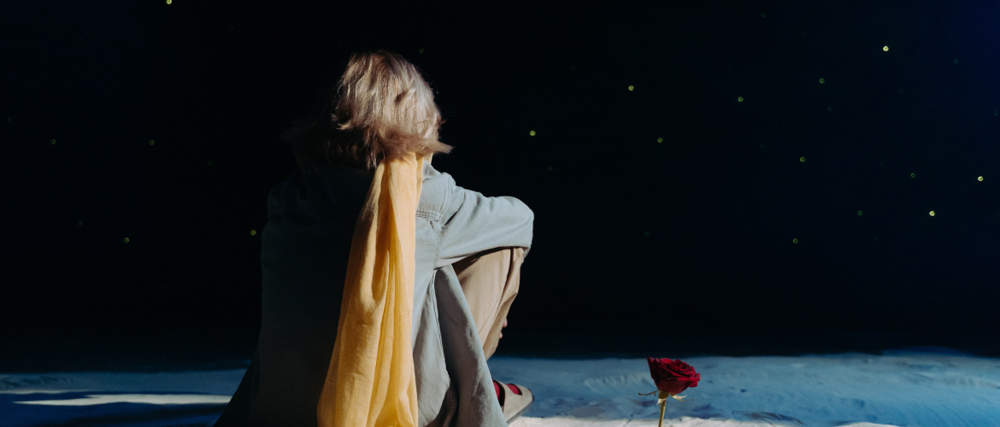

Маленький принц
— аллегорическая повесть-сказка, наиболее известное произведение Антуана де Сент-Экзюпери.
Сказка рассказывает о Маленьком принце, который посещает различные планеты в космосе, включая Землю. Книга обращается к темам одиночества, дружбы, любви и утраты. Несмотря на стиль детской книги, её герой рассуждает о жизни и человеческой природе.
Впервые опубликована 6 апреля 1943 года в Нью-Йорке. Было продано более 140 миллионов экземпляров по всему миру, что поставило её в ряд самых продаваемых книг.
Рисунки в книге выполнены самим автором и не менее знамениты, чем сама книга. Это не только иллюстрации, но и органическая часть произведения.
Сент-Экзюпери написал повесть, живя в Нью-Йорке, куда переехал после того, как нацистская Германия оккупировала Францию, и поэтому самая первая публикация книги, выпущенная издательством «Рэйнал-энд-Хичкок» в 1943 году, была сделана на английском языке в переводе Катерины Вудс.
На французском — языке оригинала — повесть была впервые издана тоже в США, сразу после публикации на английском языке. Но на родине автора, во Франции, повесть была выпущена лишь посмертно, после войны, в 1946 году, в издательстве «Галлимар», поскольку работы Сент-Экзюпери были запрещены режимом Виши.
«Ведь все взрослые сначала были детьми, только мало кто из них об этом помнит»
«Маленький принц» стал самой успешной работой писателя, было выпущено около 140 миллионов экземпляров по всему миру, что делает её одной из самых продаваемых и самых переводных книг, когда-либо изданных. Она была переведена на 300 языков и диалектов.
